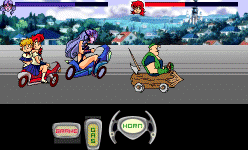

Project A-ko - On-line Games

Stu's Wacky-Waves: A-ko Bashing at
Anime HyperGuiderequires the
Shockwave plug-in for your web browser. The object of the game is to
bump B-ko more times than she bumps you. Your health meter goes down the more you get bumped by B-ko and the other
obstacles in your way. Efficient use of the gas and brake is the key to this game.
Anime Video Game Resource Center © 1998 by Luis A. Cruz